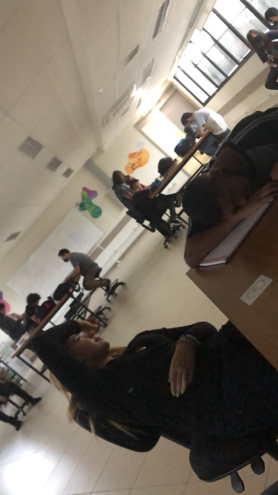

Ele foi iniciado no dia 18 de 03 a ideia principal não era a de um flipbook e sim de uma pulseira que registrava índices altos dos batimentos cardíacos e então mandava um relatório para o usuário, então depois de alguns minutos de debates decidimos que seria mais fácil e prático se fizéssemos algo que ajudasse os novos estudantes, então foi aí que a ideia do projeto belpe começou a tomar forma, o nome se originou de "HELP THE BEGINNER” que juntos ficaria Belpe.
Começamos a ver como seria a programação principal do flipbook e como iríamos iniciar o site do nosso projeto,e ver como faríamos paro o projeto apresentar as questões e as respostas na tela, e de que forma iremos estruturar o projeto, quais componentes íamos usar e qual a linguagem de programação para esse componente, como seria o layout do nosso projeto, como ele iria funcionar e como iríamos montá-lo,e se íamos precisar de mais alguns componentes para montá-lo, depois de debatermos um pouco percebemos que seria melhor usar o raspberry pi ao invés de usar arduino, no nosso projeto, pois além de ser programado em python ele seria mais adequado ao nosso projeto.
Nesse dia em questão não conseguimos prosseguir em muita coisa, pois o SENAI estava sem luz então, passamos o dia procrastinando, pois não tínhamos muito o que fazer, o lado bom foi que passamos a aula inteira rindo, então nem tudo foi perdido, também não podemos, ir pra casa já que não queríamos ganhar falta e nem abandonar nossos amigos no curso, então ficamos, juntos da professora Blanca na sala durante 5 horas.
No dia seguinte, a luz estava de volta em nossas vidas, então demos continuidade ao projeto como o esperado, Por mais que eu não estivesse fisicamente no SENAI eu estava trabalhando no projeto,então nesss dia eu consegui finalmente criar um link, para o nosso projeto, onde você provavelmente está lendo isso, Enquanto eu quase macetava meu computador para gerar um link, meus amados colegas estavam presencialmente trabalhando em criar o login do usuário do projeto, e desenvolvendo as questões e tentando montar a base do projeto no solidworks.

Na semanas seguintes, continuamos tentando montar a base do projeto no solidworks, e estávamos à espera da nossa telinha, uma raspberry 3.5 A qual não chegava, e sem ela não conseguimos montar o projeto, mas além dessa, pequena ocorrência, continuamos a desenvolver as questões sobre programação, e trabalhar no site.